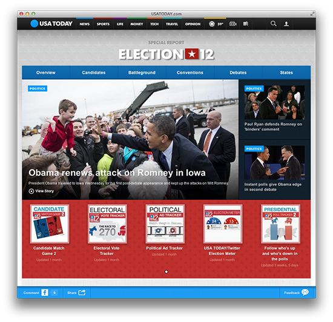
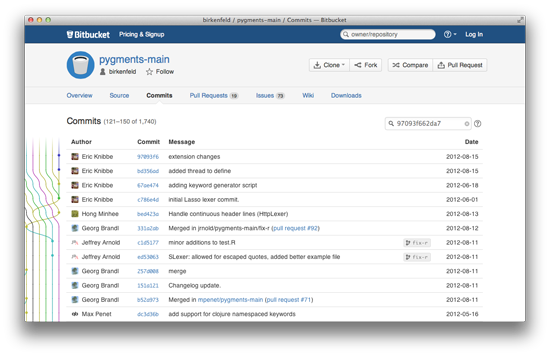
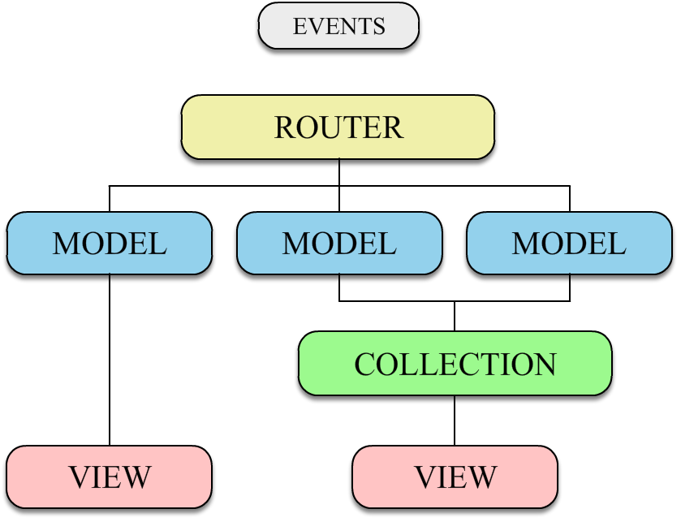

Backbone.js
Introducción
By Pablo Monterde / @pablomonterdep

Pablo Monterde
Backbone.js
Backbone.js provee una estructura a aplicaciones que hacen uso intensivo de Javascript en el lado del cliente, proveyendo modelos clave-valor enlazables mediante eventos, colecciones con una extensa API, vistas con manejadores de eventos declarativos y conexiones a interfaces RESTful JSON.
¿Qué es Backbone.js?
Get your truth out of the DOM
- Provee estructura a tu client side app
- Modelos para representar datos
- Vistas para reflejar los model en el DOM
- Sincronizar datos con el server
- Patrón MVC - MVR
- Light weight 4kb
- Creado por Jeremy Ashkenas (coffeScript,underscore.js,...)
Filosofía
- Eliminar código spaghetti
- Estructuras de datos definidas
- Separar el DOM de la lógica de negocio (no imprimir tus datos en el DOM)
- Sincronización de datos con el servidor fácil y ordenada
Por y para qué uso Backbones.js?
- Ayuda es escribir código limpio
- Compatible con plugins Jquery y otras librerias
- Conjunto de funciones = vidas mas fácil
- Flexible
- Muy ligero
Otras características
- No es sustituyente
- Curva de aprendizaje rápida
- Dependencias con librerias conocidas:
- json2.js
- Jquery - Zepto
- Underscore.js (hard dependency)
Underscore.js
NO TE CREES ESA FUNCION porque YA ESTÁ HECHA...
- 80 funciones primitivas
- +60 funciones manipulación Strings con underscoreString.js
- Collections
- Arrays
- Functions
- Objects
- Utility
var betabeersAssitants = [
{name:'Juan' , profession:'programmer', age:24},
{name:'Peter' , profession:'programmer', age:31},
{name:'Daniel' , profession:'translator', age:75}
];
_.where(betabeersAssitants, {profession: 'translator', age:75});
=> [{name:'Daniel' , profession:'translator', age:75}]
Proyectos desarrollados con Backbone.js


bitbucket
foursquare
Backbone.js Components
Events
- Orientado a eventos
- Eventos como método principal de comunicación entre componentes
- Todo componente Backbone es capaz de emitir y capturar eventos
Event funcions
- on
- off
- trigger
- once
- listenTo
- stopListening
Catalog of Events
- add
- remove
- reset
- sort
- change
- change:[attribute]
- destroy
- request
- sync
- error
- invalid
- route:[name]
- route
- all
Events mixin
- Cualquier objeto capaz de emitir y capturar eventos
var notifier = {};
var noticeboard = {};
_.extend(notifier, Backbone.Events);
_.extend(noticeboard, Backbone.Events);
noticeboard.listenTo(notifier,"alert", function(msg) {
alert(msg);
});
notifier.trigger("alert", "Hello Betabeers");
Models
Models are the heart of any JavaScript application...
¿Qué aportan los models de Backbone?
- Estructura de datos
- Validación de datos
- Memoria
- Notificación de cambios de estado
- Sincronización con el server
- ...
Creando un Model
var Talk = Backbone.Model.extend({
defaults: {
speaker: 'Default speaker',
topic: ''
},
initialize: function(){ // Contructor },
notifyTopic:function(){ ... }
});
var talk = new Talk({ speaker: "Paco Camarena", topic: 'Backbone.js'});
talk.get('topic'); // => 'Backbone.js'
talk.set('topic', "CookieBit"});
talk.get('topic'); // => 'CookieBit'
Extend
var Talk = Backbone.Model.extend({
defaults: {
speaker: 'Default speaker',
topic: ''
},
initialize: function(){ // Contructor },
notifyTopic:function(){ ... }
});
var Conference = Talk.extend({
initialize: function(){ // Contructor },
notifySpeaker:function(){ ... }
});
var conference = new Conference({ speaker: "Héctor Badal", topic: 'Yeepply'});
conference.notifyTopic();
conference.notifySpeaker();
¿Acceso a super? NO
Trabajando con atributos
- get
- set
- has
- unset
- validate
- ...
var Talk = Backbone.Model.extend({
validate: function(attrs, options) {
if(attrs.topic === 'Symbian'){
return 'Sorry, nobody is interested in it';
}
}
});
var talk = new Talk({ speaker: 'Pablo Monterde', topic:'Backbone.js'});
talk.set('topic','Symbian',{validation:true});
talk.get('topic'); // => 'Backbone.js'
Cada cambio en un modelo dispara un evento change
Estados de un model
- isNew
- hasChanged
- changedAttributes
- previous
- ...
var talk = new Talk({ speaker: "Paco Camarena", topic: 'CookieBit'});
talk.set('topic','Backbone.js');
var previousTopic = talk.previous('topic'); // => 'CookieBit'
Useful for getting back to a valid state after an error occurs.
Sincronización y persistencia
RESTful API
- fetch
- save
- destroy
- sync
Traer datos del servidor
fetch
var Talk = Backbone.Model.extend({
urlRoot:'talks',
});
var talk = new Talk({id:1});
talk.fetch(); // se genera GET /talks/1
var Talk = Backbone.Model.extend({
urlRoot:'talks',
});
var talk = new Talk({id:1});
talk.fetch(); // se genera GET /talks/1
Persistencia datos
save - sync
var talk = new Talk({speaker: "Pablo Monterde", topic: 'Backbone.js'});
talk.save(); // se genera POST /talks , contenido: {speaker: "Pablo Monterde", topic: 'Backbone.js'};
talk.set('id',1);
talk.save(); // se genera PUT /talks/1 , contenido: {id:1, speaker: "Pablo Monterde", topic: 'Backbone.js,is'};
Se validan los datos antes de enviarlos al server
.save({wait:true}) no se modifican los atributos hasta que se recibe respuesta del servidor
var talk = new Talk({speaker: "Pablo Monterde", topic: 'Backbone.js'});
talk.save(); // se genera POST /talks , contenido: {speaker: "Pablo Monterde", topic: 'Backbone.js'};
talk.set('id',1);
talk.save(); // se genera PUT /talks/1 , contenido: {id:1, speaker: "Pablo Monterde", topic: 'Backbone.js,is'};
Borrado de datos
destroy
talk.destroy(); // se genera DELETE /talks/1
talk.destroy(); // se genera DELETE /talks/1
Trigger evento destroy
Collections
- Conjunto ordenado de modelos
- Modeliza JSON
- Persistencia de conjunto de modelos
- proxy underscore methods
Creando un Collection
var Betabeers = Backbone.Collection.extend({
model: Talk
});
var talkArray = [{speaker: "Paco Camarena", topic: 'CookieBit'},
{speaker: "Héctor Badal", topic: 'Yeepply'},
{speaker: "Pablo Monterde", topic: 'Backbone.js'}];
var betabeers = new Betabeers(talkArray);
Solo se asocian a un tipo de model. Colleccions multimodel mediante plugins.
Añadiendo - eliminando Modelos
var firstTalk = new Talk({speaker:'Paco Camarena', topic:'CookieBit'});
var secondTalk = new Talk({speaker:'Héctor Badal', topic:'Yeepply'});
var thirdTalk = new Talk({speaker:'Pablo Monterde', topic:'Backbone.js'});
var betabeers = new Betabeers();
betabeers.add(firstTalk);
betabeers.push({speaker: 'Héctor Badal', topic: 'Yeepply'});
betabeers.update(thirdTalk);
betabeers.remove(thirdTalk);
betabeers.shift();
betabeers.pop();
Trigger evento add/remove
Recuperar - iterar Modelos
var betabeers = new Betabeers();
betabeers.get("id-de-modelo");
betabeers.at(1);
betabeers.where({topic:'Backbone.js'});
betabeers.forEach(function(talk){
return talk.get('topic');
});
Sincronización con el servidor
var Betabeers = Backbone.Collection.extend({
model: Talk,
url: 'talks'
});
var betabeers = new Betabeers();
betabeers.fetch(); // se genera GET /talks
Views
- Clases de control que nos ayudarán a representar nuestros modelo
- Escuchar eventos del DOM y Models/Collections
- Representar el estado y los datos al usuario
- Aséptico respecto al motor de plantillas
- Delega la renderización final al desarrollador
Creando un View
var TalkView = Backbone.View.extend({
tagName: 'li',
className: 'talkClass',
attributes: {'style':'display:block'},
id: 'IamATalk'
});
var talkView = new TalkView();
talkWiew.el;
// => <li id="IamATalk" class="talkClass" style="display:block" ></li>
talkWiew.$el;
// => $(talkWiew.el)
Asociando un View a un elemento del DOM
var talkView = new TalkView({
el:'#firstTalk'
});
talkView.el; // => <div id="firstTalk" ><div>
Asociando un modelo
var TalkView = Backbone.View.extend({
initialize: function() {
this.listenTo(this.model, "change", this.render);
},
render: function() {
...
}
});
var talkView = new TalkView({
model:talkModel
});
Render
var TalkView = Backbone.View.extend({
render: function() {
this.el.innerHTML = this.model.get('name');
//Or the jQuery way
this.$el.html(this.model.get('name'));
}
});
Al final... no hay magia...renderizas tu!!!
Templating
var TalkView = Backbone.View.extend({
template: _.template('<div><%= topic %></div>'),
render: function() {
var newHtml: this.template(this.model.toJSON());
this.$el.html(newHtml);
}
});
JavaScript templating libraries:
- Twig.js
- Mustache.js
- underscore (default)
- Haml.js
- Eco
User Interaction - Events
var TalkView = Backbone.View.extend({
events: {
'dblclick' : 'open',
'click .reset' : 'resetTopic',
'mouseover .title' : 'showTooltip'
},
open: function() {
this.$el.show('fast');
},
resetTopic: function() {
this.model.set({topic:''});
},
showTooltip: function(){ ... }
});
Router
Backbone.Router provides methods for routing client-side pages, and connecting them to actions and events
- HTML5 History API
- Activa historial del navegador
- Ordenar la aplicación
- Compatible con hash fragments
¿Cómo funciona?
var Router = Backbone.Router.extend({
routes:{
"" : "index", // /
"events" : "events", // /events
"events/:month" : "showMonthEvents", // /events/march
"events/:month/t:id" : "showMonthTalks" // /events/march/t5
},
index: function() { /* ... */ },
events: function(){ /* ... */ },
showMonthEvents: function(month){ /* ... */ },
showMonthTalks: function(month,talkId){ /* ... */ },
});
Activar y navegar
var appRouter = new Router();
Backbone.history.start({pushState: true});
appRouter.navigate("events", {trigger: true, replace: true});
Ventajas
- Aporta herramientas útiles
- No fuerza un motor de plantillas determinado
- Pequeño
- No inyecta lógica en tu HTML
- No hook code en atributos data- o ng-
- Restful API
- Libreria, no framework. Compatibilidad
Desventajas
- Renderizado no automático
- No óptimo para pequeñas aplicaciones